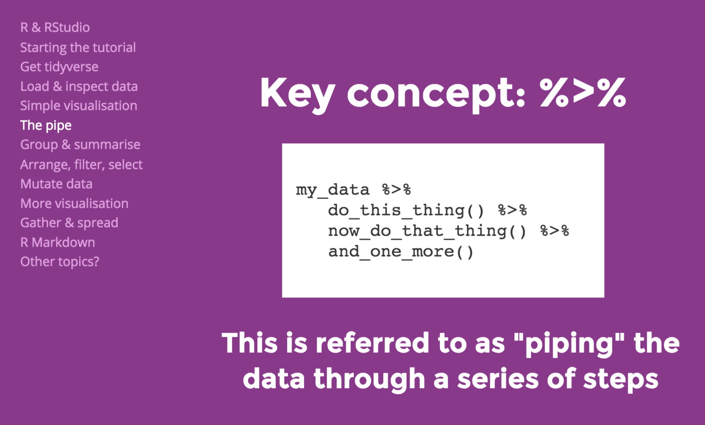

Dealing with Columns
Which beach is dirtiest? Which council does the best job of preventing beach contamination? Have beaches been getting cleaner in the past 5 years? We can answer all of your questions about the Sydney Beaches dataset, but first we need to do some tidying up.
In this lesson, we’re going to try out the janitor package and use functions from dplyr, a package in the tidyverse that is designed for data wrangling, to rename and select columns. We will also introduce the idea of the pipe %>%, which allows you to string commands together.
Lesson Outcomes
By the end of the lesson, you should be able to :
- clean up column names automatically using
clean_names()or manually usingrename() - create subsets of data using
select() - “pipe”
%>%data through a series ofdplyrfunctions
Clean up your column names
When you enter data in Excel, you most often don’t think too much about what you call each column. After all, you just label them once and as long as they are meaningful to you, what does it matter if the column name is a long combination of CAPITALLETTERS, lowercaseletters, and numbers?
When you are working with variables in R though, you need to type the name of each variable, every time you want to work with it. So, it makes sense to make your column names as simple, but meaningful as possible! Ideally, they should also be consistently formatted.
An aside
Jenny Bryan has really good advice about naming things. She recommends that you using a labelling system (for files, but the same principles apply for variable names) that makes everything readable by both the computer and by a human (right-now you, but also future you, and anyone else who might interact with your data!).
Is there anything problematic about the column names in the sydneybeaches dataset?
The variable names are mostly ok, except for the one that contains the bacteria level values. “Enterococci (cfu/100ml)” sticks out as something I don’t want to type more than once. How ’bout you?
In this screencast, we’ll review:
- How to reformat your column names to be consistent
- How to change the name of variables that are unwieldy
Your turn to have a go
Watch the video and then carry out the following steps:
- Make sure you have the
janitorandtidyversepackages installed and loaded
- Clean up your column names using whichever method appeals to you most
- Change the name of the bacteria column to something that is meaningful to you, though we recommend ‘beachbugs’ if you want to stay consistent with the lesson!
Selecting just a subset of variables to look at
The beaches dataset is not big; there are a lot of observations but we are only looking at 8 variables. Often you will be dealing with many more variables than this and sometimes you want to simplify your life by only looking at a subset of those variables. The select function from the dyplr package is useful for just this situation.
In this screencast, we’ll review:
- How to select just a few variables for closer inspection
- How to change the order that your variables appear
Watch the video and then create a new dataframe that contains only the site, council, and beachbugs columns.
Make your life easier with the pipe %>%
There are lots of old school R users who find the pipe the most confusing aspect of the tidyverse. For beginners, though, the pipe can be really intuitive! So, consider this one of the few benefits of learning R now!
What is the pipe? The pipe is an operator from the magrittr package that allows you to take a dataset and “pipe” it through a series of functions in a step by step way. It looks like this: %>%

The pipe allows you string operations together in a way that is really powerful and accomplishes a lot with relatively few lines of code.
In this screencast, we’ll review:
- How to pipe a handful of cleaning, renaming, selecting commands together
- How to write your clean data to a new .csv file
Your turn to have a go
Watch the video and then carry out the following steps:
- Pipe together a series of commands that creates a new dataframe called cleanbeaches containing the output after you have
- Cleaned the names
- Renamed the bacteria column
- Selected interesting columns
- Cleaned the names
- Write your cleanbeach data to a new .csv called “cleanbeaches.csv”
Originally the magrittr pipe %>% was just a tidyverse thing, but since we first designed RYouWithMe, many R users, including those prefer “base” style R code, have recognised the value of being able to string together code operations.
R version 4.1.0 now includes a “native” pipe |> that you might see in other people’s code. It works the mostly same as the tidyverse pipe %>%- you can read more about it here
Now have a go with your own data!
First, read your data in! (Need a refresher? Check out Basic Basics Lesson 3 here.
Take a close look at your variable names.
Are there any that are untenable? Use rename to whip them into shape
Have you used similar formatting across your variables? Use clean_names or toupper or tolower (depending on your preference)
How many variables do you have? Does it make sense to pull just a few of the most interesting ones to look at? Use select to create a new dataframe of just the important stuff.
Pipe it all together Can you use the pipe to string together a series of operations, starting with read_csv and finishing with write_csv, with a series of piped cleaning operations in the middle??
Cleaned up columns? Check! Next up - exploring what’s in those rows!